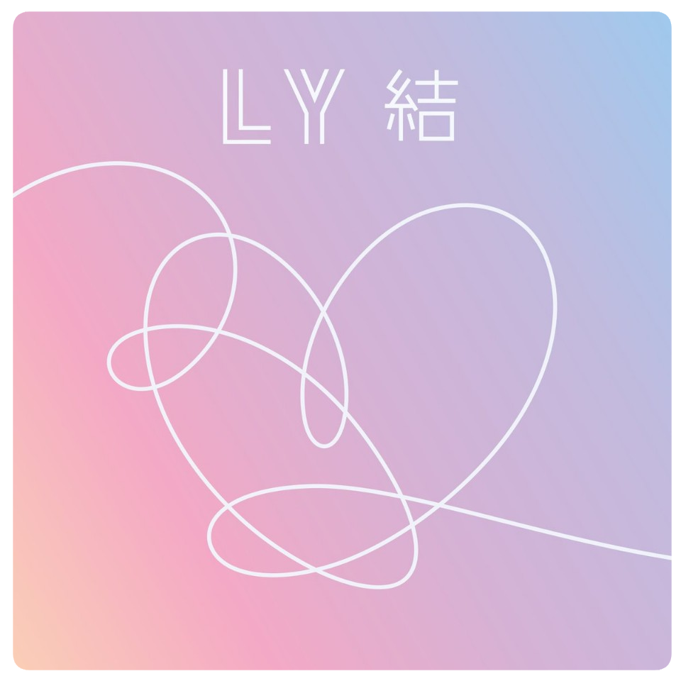

LOVE YOURSELF 結 'Answer'

- 방탄소년단, LOVE YOURSELF 結 ‘Answer’
- “팬들과의 축제” 시작!
LOVE YOURSELF 모든 비밀이 드러나다! ‘진정한 사랑은 나 자신을 사랑하는 것부터’
타이틀곡 ‘IDOL’, 방탄소년단이 보여주는 ‘문화적 하이브리드’
Track list
- A Type
- 1. Euphoria
- 2. Trivia 起: Just Dance
- 3. Serendipity(Full Length Edition)
- 4. DNA
- 5. 보조개
- 6. Trivia 承 : Love
- 7. Her
- 8. Singularity
- 9. FAKE LOVE
- 10. 전하지 못한 진심(Feat. Steve Aoki)
- 11. Trivia 轉 : Seesaw
- 12. Tear
- 13. Epiphany
- 14. I'm Fine
- 15. IDOL
- 16. Answer : Love Myself
- B Type
- 1. Magic Shop
- 2. Best Of Me
- 3. Airplane pt.2
- 4. 고민보다 Go
- 5. Anpanman
- 6. MIC Drop
- 7. DNA(Pedal 2 LA Mix)
- 8. FAKE LOVE(Rocking Vibe Mix)
- 9. MIC Drop(Steve Aoki Remix)(Full Length Edition)
- 10. IDOL(Feat. Nicki Minaj)